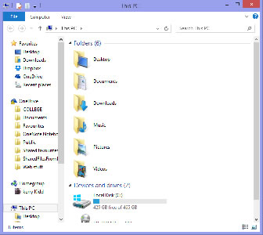

Here I am going to explain some basic commands to get you started with Linux.
| This command lists the files and directories within the drive you are currently in. |  | ||
| This command lets you change directory by adding the directory name after the command | |||
| This command is used followed by a file or directory name to copy it from one location to another | |||
| This command creates a new directory | |||
| This is the help command in Linux, if you type man ls it will display the help menu for the ls command | |||
| This is used for renaming directories or files | |||
| date | This is used for showing the system's date and time | ||
| This is used for showing the amount of space left on the Hard Disk Drive | |||
| This command is used to display the disk space that is being used by each file within a particular file system. | |||
| This command displays the top running process in the system, along with the memory they use | |||
| This command shows the user the status of the processes that they are running | |||
| This command gives you information on the operating system's version and details | |||
| Use this command when you need to compress files in the gzip format | |||
| This command is used to uncompress a gzip file | |||
| When working on a Linux Command line system, this command is used to clear the screen |